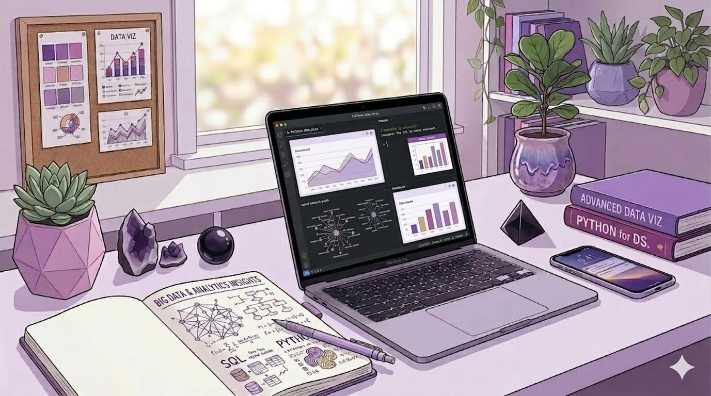

Licenciada en Economía, especializada en Ciencia de Datos e Inteligencia Artificial. Me apasiona diseñar productos de datos bajo una filosofía user-centric, traduciendo la complejidad técnica en soluciones intuitivas y de alto impacto.

Sr. Data Analyst
· Ciencia de Datos e IA
Soy Elena, Licenciada en Economía por la UdelaR (Uruguay) y especialista en Ciencia de Datos e IA por la UTEC en colaboración con el MIT. Desde 2019 me especializo en análisis de datos avanzado, desarrollándome en sectores tecnológicos y banca. Actualmente me desempeño como Sr. Data Analyst en el área de Prevención de Fraude.
Para mi, un modelo de datos solo cobra valor cuando genera impacto en el negocio y es adoptado naturalmente por el usuario. Me apasiona diseñar productos de datos bajo una filosofía user-centric, traduciendo complejidad técnica en soluciones intuitivas. Mi objetivo es generar productos de datos que no solo funcionen, sino que se usen.
Me encanta involucrarme en todo el proceso: desde entender qué historias cuentan los datos hasta verlos en producción transformando el día a día del negocio y los usuarios.
Este sitio web, vinculado a mi repositorio en Github, tiene como objetivo difundir y poner a disposición los principales proyectos que desarrollé durante la especialización. Se presentan algunos de los proyectos más relevantes: cada uno representa los aprendizajes, competencias y desafíos más significativos de mi recorrido académico y profesional.
Agente de IA para el sector financiero que analiza reclamos bancarios en lenguaje natural, identifica causas raíz y genera respuestas fundamentadas.
Ver proyecto →Sistema de recomendación de restaurantes con cinco modelos progresivos. Desde ranking simple a filtrado colaborativo enriquecido con sentimiento.
Ver proyecto →Segmentación de clientes retail mediante K-Means. Tres perfiles accionables con estrategias personalizadas por canal y comportamiento.
Ver proyecto →Predicción de popularidad de libros con XGBoost. Variable objetivo inteligente usando NPS Ajustado normalizado por género.
Ver proyecto →Segmentación semántica de tumores en MRI con U-Net.
Ver proyecto →A las órdenes para discutir mis proyectos o nuevas colaboraciones.